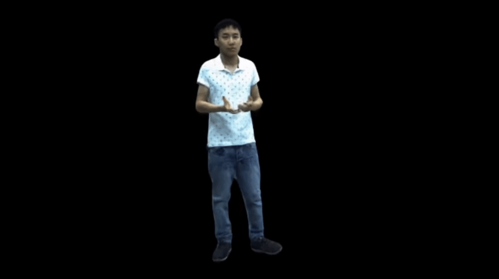
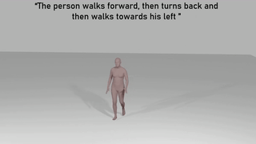

M. Hamza Mughal
About Me
I am a Ph.D. student at Max Planck Institute for Informatics advised by Prof. Christian Theobalt and Prof. Vera Demberg. I am also a member of the RTG 2853 “Neuroexplicit Models of Language, Vision, and Action”. Previously, I got Master’s in Visual Computing from Saarland University and worked as a Research Assistant at the MPII.
My work involves exploring relations between speech, language and motion in human interactions, grounding human motion with language and enabling virtual humans to interact by means of multimodal learning.
Research Interests
- Vision/Animation: Human Gesture Synthesis and Analysis, Multi-modal Motion Synthesis, Generative Modeling
- Language: Relations b/w linguistic structures and gestures, discourse and communication
Publications
-
IEEE/CVF Conference on Computer Vision and Pattern Recognition (CVPR), 2024.Details Soon
-
IEEE/CVF Conference on Computer Vision and Pattern Recognition (CVPR), 2023.PDF Project Page Highlight (Top 10% of selected papers)
-
 IEEE Journal of Selected Topics in Applied Earth Observations and Remote Sensing (JSTARS), 2021.
IEEE Journal of Selected Topics in Applied Earth Observations and Remote Sensing (JSTARS), 2021.
Timeline
| 2024 - Present | PhD student | MPII, Germany |
| 2022 - 2023 | Research Assistant | MPII, Germany |
| 2021 - 2023 | Master in Visual Computing | Saarland University, Germany |
| 2021 | Visiting Research Student (DAAD Scholar) | TUM, Germany |
| 2020 - 2021 | Machine Learning Lead | Scribe Audio, Pakistan |
| 2019 - 2020 | Computer Vision Engineer | VisionX, Pakistan |
| 2015 - 2019 | Bachelor in Electrical Engineering | NUST-SEECS, Pakistan |
Powered by Jekyll and Minimal Light theme.